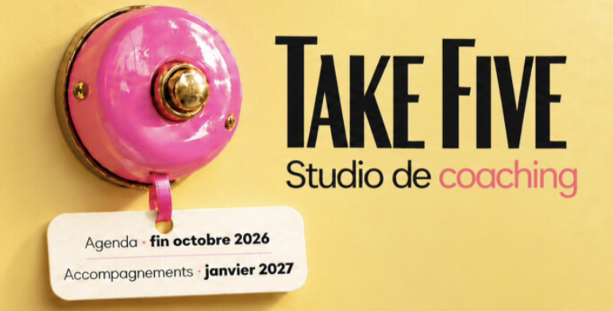
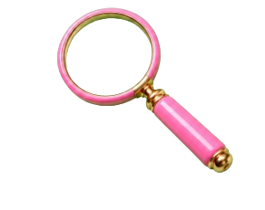
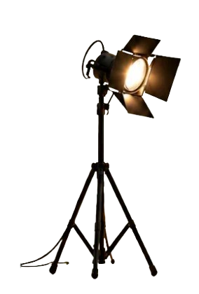

Take Five – Studio de coaching dédié aux artistes

Take Five c'est quoi ?
-
Je vous présente Take Five tout simplement tel que je l'ai pensé : un projet qui s'inscrit naturellement dans mon parcours et qui n'est pas dissociable de qui je suis aujourd'hui.
-
Un studio de coaching dédié aux artistes et à leur entourage professionnel, qui propose des accompagnements individuels et des formations ciblées.
-
Il y a une attention profonde à l'humain : à ce qui rend chacun unique, à ce qui se joue entre les lignes, entre les personnes, à ce que nous construisons ensemble. Il y a la connaissance et l'expérience du métier. Il y a du vécu. Et puis l'élan de l'accompagnement.
-

Il y a enfin et surtout une immense gratitude envers les artistes et ceux qui les subliment, qui contribuent à rendre le monde plus respirable. C'est pour eux que j'ai créé Take Five. Pour qu'ils puissent prendre le temps et la place dont ils ont besoin pour créer depuis un endroit juste, qui leur ressemble profondément.
-
Alors il y a peut-être en vous une âme d'artiste que vous ne soupçonniez pas encore ! Ou êtes-vous simplement engagés dans une quête intérieure qui nous ramène tous au même endroit : à ce qui nous rend singuliers, et à la juste place que nous pouvons lui donner. Bienvenue !
-

Take Five — studio de coaching dédié aux artistes, aux âmes d'artistes et à leurs entourages professionnels.